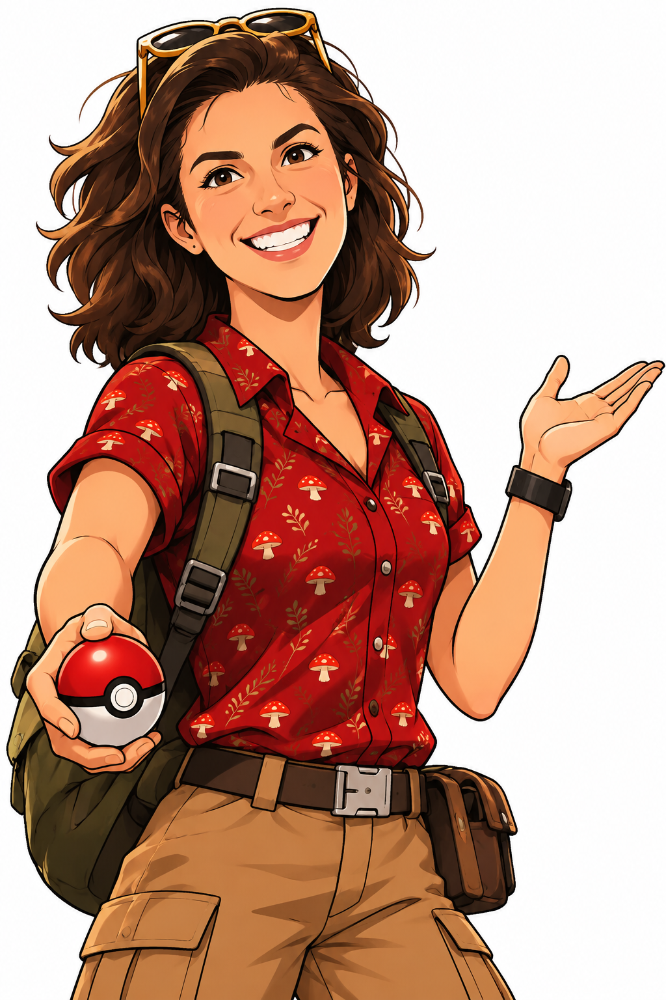

Tipo
- ORDEM Polyporales
- FAMÍLIA Polyporaceae
- GÊNERO Ganoderma
- ESPÉCIE Ganoderma orbiforme
Fungo registrado!
Escaneie outro QR code para continuar a exploração

Sobre
O gênero Ganoderma compreende fungos poroides pertencentes à família Polyporaceae (Basidiomycota). Seus representantes apresentam basidiomas geralmente resistentes, com consistência coriácea a lenhosa, sendo frequentemente encontrados associados à madeira, onde desempenham importante papel na decomposição da matéria orgânica.
- HABITAT
- Madeira
- TEXTURA
- Coriácea a lenhosa
- FUNÇÃO
- Decompõe matéria orgânica